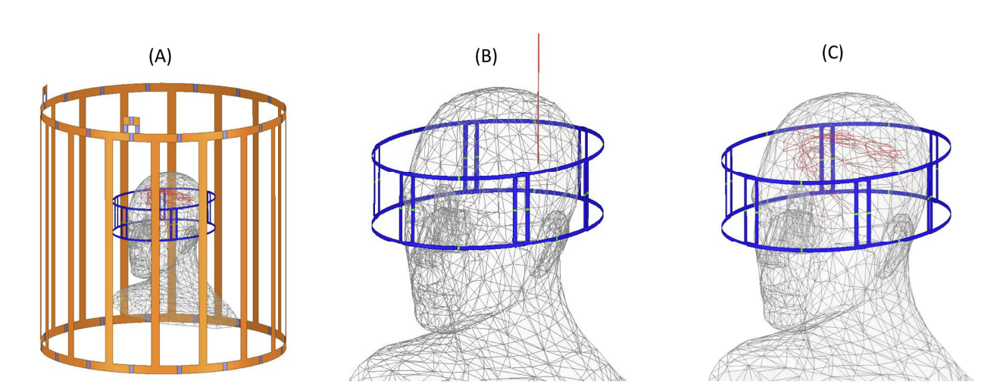
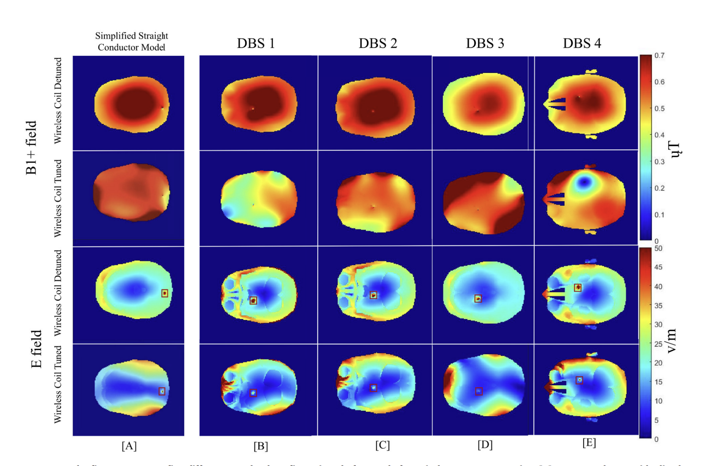

IEEE Access, 2026 · ISMRM 2026 · 2025/10–2026/2
Reducing RF-Induced Heating of DBS in 3 T MRI
Reducing RF-Induced Heating of DBS in 3 T MRI Using Dual-Role Receive Arrays as Wireless Resonators: A Simulation Study
Paper
Magnetic resonance imaging (MRI) scanning remains restricted for patients with deep brain stimulation (DBS) implants because of safety concerns related to RF-induced heating. A six-channel dual-role head coil array was designed, and each element’s resonant frequency was optimized during RF transmission to reshape the transmit field. The LSE–Adam framework achieved an average reduction in peak 1 g specific absorption rate (SAR) of 72.09% across four realistic DBS lead models.
Simulation model
The electromagnetic model places a decoupled six-channel dual-role head array inside a 16-rung 3 T body transmit coil. Panel A shows the complete system. Panel B uses an idealized straight conductive wire for concept validation, while Panel C shows four realistic DBS lead trajectories. The four trajectories are overlaid only for visualization; each lead configuration was simulated and optimized independently.

Field control and heating reduction
The figure compares the simplified straight conductor model in Column A with four realistic DBS lead configurations in Columns B–E. For each configuration, the first two rows show the B1+ field with the wireless resonators detuned and tuned, while the last two rows show the corresponding E-field distributions. The red boxes mark the target region near each DBS lead tip, where RF-induced heating is most severe. After tuning, the E-field is substantially reduced near the lead tip while the overall B1+ field uniformity is preserved.
Across the tested DBS configurations, predefined coil-state control reduced the average E-field near the lead tip by 45.9%. Continuous fine-tuning with a genetic algorithm (GA) increased the reduction to 68.3% while preserving transmit-field uniformity. For whole-head optimization, LSE–Adam reduced peak 1 g SAR by an average of 72.09% across four realistic DBS lead models.
